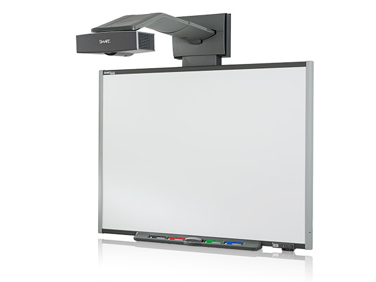

The Project
This project will be my Bacherlors project, my goal before the end of the semester is to have made a shape recognition component for the SMART boards, it will recognize what you draw as you draw it, and save those components as objects, this will be especially useful for UML diagrams, for moving components around as a whole instead of individual lines, and also for nesting information within components.
The Technology
This will be written in C#, and will also utilize a SMART board.
Screenshots
None yet, but here is a picture of a SMART board
